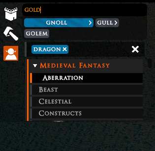
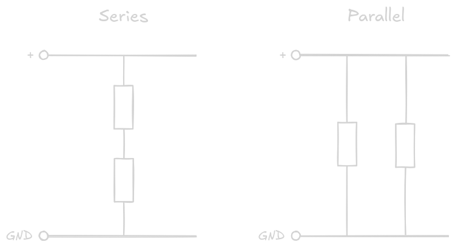
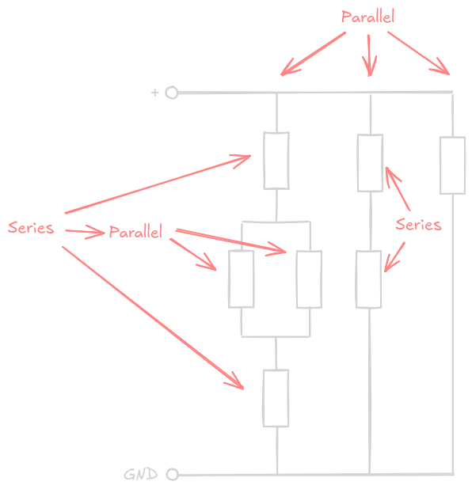
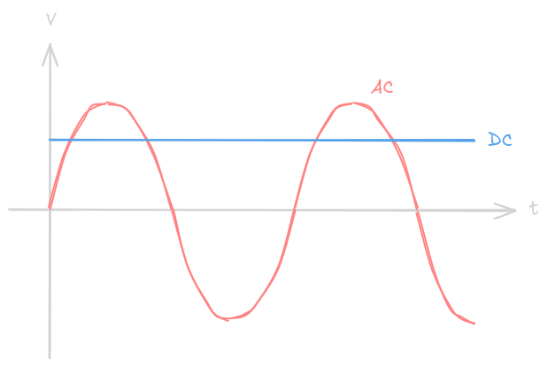
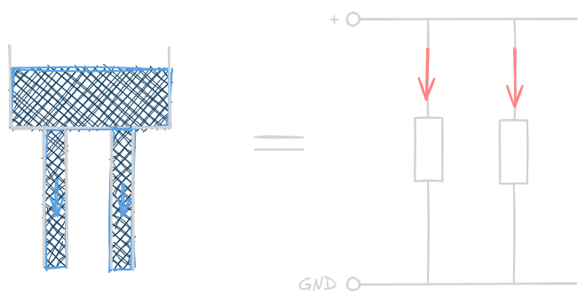

After covering a lot of the broad ideas behind the tag system, I now want to turn some attention to the nitty-gritty: How do we go from "some text a player entered in the search field" to a list of (hopefully relevant) results?
Finally, Text Ranking
When someone wants to search for a thing, they'll enter some text they feel has relevance to the thing they're searching for - be it some property of it (species, equipment, material, ...) or what it is called. We take this input and run both a search on asset names and one on our list of tags.
Levenshtein
The core of our text matching is a modified Levenshtein algorithm. Without becoming too technical, the so-called "Levenshtein-distance" is how many "steps" there are between two different words. This is easier to understand with some examples:
- "cow" and "cow" have a Levenshtein distance of 0 - they're identical.
- "cow" and "crow" have a distance of 1 - you need to add one letter to go from cow to crow (and vice versa, remove one from crow to go to cow)
- "pig" and "pug" also have a distance of 1 - you need to change one letter.
- "barkeeper" and "blacksmith" have a distance of 7.
And so on.
Just using this fairly simple algorithm works, but it often leads to strange results. For example, "bla" has a distance of 3 to "cow", but a distance of 7 to "blacksmith", even though it is a perfect match for the start of "blacksmith" while every single letter of it is different from "cow". Using it unmodified, though, would suggest "cow" over "blacksmith" while typing, which is... not ideal.
To get more sensible results, we've enforced that the first letter always has to be a perfect match (typos tend to happen more commonly within words, not at the start), as well as ranking partial matches much more strongly. This is definitely not a solved problem, and we'll keep iterating on this to further improve results[0].
Search
Searching does two separate processes, both using the Levenshtein distance detailed above:
1. Try to find fitting assets based on the currently selected tags and the current search text input (we'll refer to this as "free text" from now on), with name matching. 2. Try to find tags relevant to the entered free text to suggest below the search input. This doesn't actually affect the search results (as in, which assets are shown); it just dictates which tags are suggested.
For asset search we have a few different behaviors:
No active tags, but free text: We will show all assets that match reasonably close to said input, ordered by closest to furthest match.
Only active tags, no free text: We show all assets that match all the active tags.

Both active tags and free text: We show the same set of assets as if no free text were entered, but order the results by their closeness to the free text.
To understand how exactly the ranking/ordering of results works, we first have to take a small detour.
Now let's talk Electronics
Okay, maybe it's a large detour.
In electronics, there are two basic ways to connect two components together: In Series or Parallel[1].

To make more complex circuits, you just create a large combination of components connected in series or parallel[2]

While all this can become very complex, especially with alternating current (AC) rather than direct current (DC), for what we care about, we can look at the simplest possible case: Resistors in a DC system[3].

A commonly known factoid is that "electricity takes the path of least resistance" - but what does that even mean?
While it might suggest that electricity "knows" which path is the easiest for it to go through and then "chooses" this path that is not quite true: In reality electricity always takes all possible paths, all the time, but more of the "total amount of electricity" goes over the path with the least resistance (and then the "second most amount" over the path with second least resistance, etc). If the resistance of one path is sufficiently lower than all other paths, only negligible amounts of electricity will go over said other paths, with "effectively all of it" going through that one low resistance path.
For simplicity's sake, let's ignore how electricity "knows" which path has what resistance and how it "chooses" paths and focus on the two other questions: What even is resistance and what happens when there are two paths with similar (or even equal) resistance.
For DC systems, the often-used analogy of electricity behaving like water in pipes is actually surprisingly apt. A pipe (wire) has lower resistance if its diameter is larger, thus allowing more water (electricity) to flow through it more easily. Intuitively it's also obvious that if you have a water tank (power source) with one pipe (wire) going out of it, and then add a second larger pipe (second wire with lower resistance) overall there will be more water flowing out of the tank (more electricity out of the power source) - however, crucially, both pipes (wires) still carry water (electricity), it's not just the largest of the pipes (lowest resistance wire) that has water (electricity) in it.

This is what a "parallel" connection is: Both pipes (wires) are "next to" each other, instead of "one after another".
Conversely, if we want to use this analogy to examine series connections, we just need to imagine two pipes placed one after the other. Unfortunately, this is where the water-pipe analogy starts breaking down somewhat, at least at the "intuitive human scale": Two 1m-long pipes of the same diameter after another will not significantly reduce the flow rate compared to a single 1m-long pipe. On the other hand, two equally resistant wires after another do hamper electricity flow twice as much as a single one would[4].
Now, all of my uses of "wires" above could also be replaced with "resistors"[5].
To put this in more direct words: The total resistance of two (or more) resistors in series is their individual resistances added up:

The formula for resistors in parallel is a bit trickier and, unfortunately, not quite as intuitive:

However, we don't need to understand the formula itself as long as we understand some of its properties:
1. No matter how many resistors there are, the total resistance of all of them in parallel will never be higher than the lowest individual resistance. This is directly analogous to the water tank with pipes example: No matter how many pipes you add, you will never have less water flowing out of the tank than if you had only the biggest of those pipes - or in other words: every pipe you add will always increase how much water flows out (= every parallel resistor added will always increase current flow/decrease total resistance).
2. The total resistance is a quite intuitively satisfying value: If there are two resistors with equal resistance (= pipes with equal diameter), the total resistance is half the individual resistances, leading to twice the "electricity flow". The same with 3 equal resistors: total resistance is a third, and electricity flow is tripled. If there are two resistors and one of them has much higher resistance than the other, for example, 10 "resistance" and 100 "resistance", the total resistance will be 9.1 "resistance"; very close, but still below the lower of the two (leading to similar but slightly higher "electricity flow"). And finally, if there are two resistors of similar resistance, for example, 12 and 8, the final resistance is 4.8, proportionally spaced below the lowest individual resistance.
What does this have to do with search?
Okay, sure, but what the heck does this have to do with TaleSpire, and even more importantly, search??
Well, due to our synonym and example_of system for tags (see part 2 for more context), you might end up with situations where you enter "bu" into the search. This will match: "bull", which is an example_of "bovine", as well as "buffalo", which is also an example_of bovine. However, we really don't want our tag suggestions to be duplicated because that wastes our precious few UI slots for suggestions - so let's combine them into one. But since we rank suggestions based on how "close" they match the search input to show the most relevant ones, we need to do something with the sorting score.
The base sorting score for each match just uses the modified Levenshtein distance introduced above, so we could of course just choose the score of either "bull" or "buffalo". But if there are several results matches, we probably want to rank it more strongly than if it were just one. And this is where the parallel resistor calculation comes in:
If we remember, no matter how many parallel resistors (example_of/synonyms) we have, the total resistance (sorting score) is guaranteed to be lower (better) than the lowest individual resistance (best individual sorting score), or, in other words: Extra matches, no matter how bad, will always improve the score - but good extra matches improve the score more than bad extra matches: Two similar scores will improve the total score a lot, two very dissimilar scores will only improve the score a tiny bit over using just the better of the two. And finally, this system does not care whether it's just one match, two, or 15 that need to be combined[6].
This does actually also apply to name search as well, as we match for individual words of the name and increase the score of suggestions if several words of an asset name matched versus if just one of them matched, so searching for "Demon Barbarian" will match the asset "Cool Demon Barbarian" much stronger than "Demon Spellcaster", "Human Barbarian" or just "Barbarian".
Assembling results
And finally, we have a list of assets that have all the tags you searched for, sorted by how well they matched your search. (Or, for tag suggestions, a list of tags to show)
I hope this was an interesting insight into what actually goes into assembling a search result! We're now nearing the end of this devlog series, but I do still have a bit more for you.
Additionally, our code doesn't really care for what algorithm we use there, as long as that algorithm spits out a "score" or "rank" of how good a certain text fits, so it might also happen that we rip out the Levenshtein distance altogether once we find a more suitable algorithm.
In this post I will be using the IEC symbols for electrical components, not the ANSI ones commonly used in North America.
This isn't quite the whole story; there are circuits that don't nicely fit into series or parallel, like a Wheatstone bridge or star topology in multi-phase power circuits. However, series and parallel are enough for the purposes of this explanation.
This is still in an "idealized world" in steady state, right now we only care about pure Ohmic loads, so no parasitic capacitance, induction, or non-linear elements.
You do still lose pressure over long pipes due to friction between fluid and the pipe walls, which, in the end, will also reduce flow rates. However, that is more of a phenomenon for longer pipelines, so it is not as intuitively understandable.
"Normal" resistors are quite simple components - essentially, they're just "worse wires". They're made to resist the flow of electricity more than a normal wire would, and that's all they do. They can become more complex depending on how accurately they need to be "worse" and how much power they need to be able to carry, but they're still overall quite simple. For other components like capacitors, inductors, diodes, ... the water-pipe analogy unfortunately stops working very quickly, especially if we don't consider the DC steady state, but that's neither here nor there.
An interesting implementation detail is that we technically omit the last division (the outermost 1 / (...) ) because we only care about the ordering, not the actual final "resistance value", and all that 1 / (...) does is make large scores small and small scores large, without changing their order. Besides skipping one relatively costly division, another important benefit is that it doesn't matter in which order the scores get added up and we don't need to keep a list of all individual scores to combine at the end - we can just add the individual 1/score values together and the final sum is the final score which makes it delightfully simple to parallelize across threads for lightning fast live search